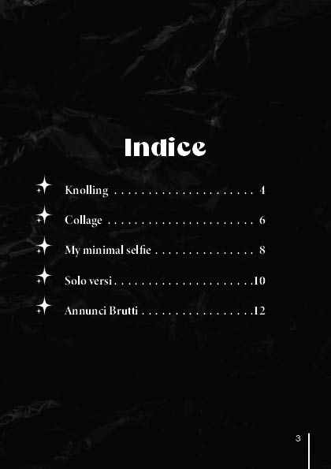
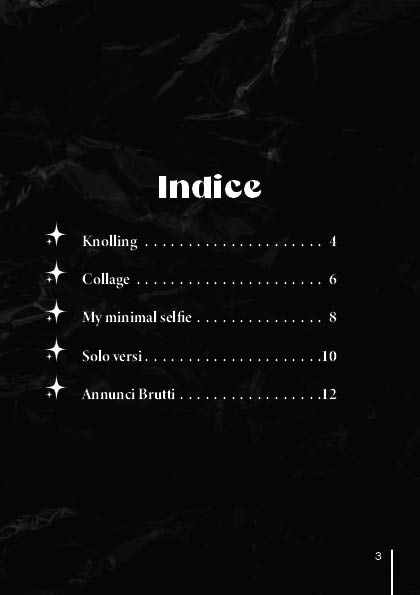

Scopri il resto del progetto

 

Questo portfolio è una raccolta di opere realizzate durante il corso di Nuove Tecnologie dell’Arte presente nell’Accademia di Belle Arti di Catania nell’anno di studio 2023/24 con il docente Santoro Gianluca (Layout e tecniche di visualizzazione).
Software utilizzati:Adobe Indesign
Scopri il resto del progetto